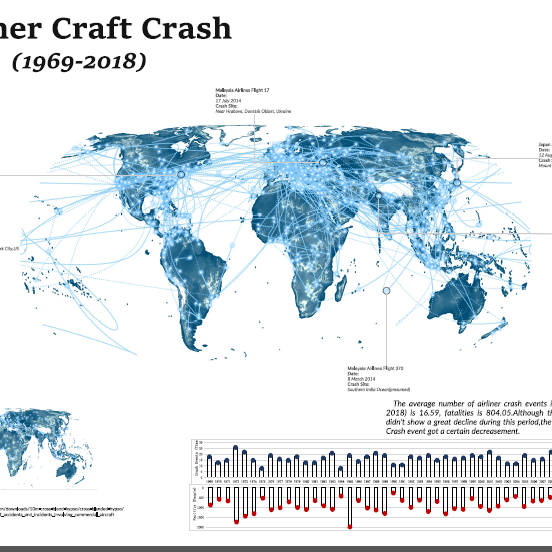

Mapping Procedure
Record the process on making the map
-

Step 1
Data Preparation
1) Searched topographical World Map for the base map 2) Used python code to crawl the crash data from webiste and geocode the location info.
-

Step 2
Projection
1) Reprojected the crash data whose coordinates are based on Google Map 2) Selected the suitable project (Eckert IV) for the Map
-

Step 3
Creating Aircraft Trajectory
Devloped Arc Script Tool for Creating Aircraft Trajectory based on their start position, crash site and destination coordinates.
-

Step 4
Statistic
Analyzed the Airliner Aircraft Crash situation in each year.
-

Step 5
Map Design
Designed suitable symbols for different information and layout for the final map.